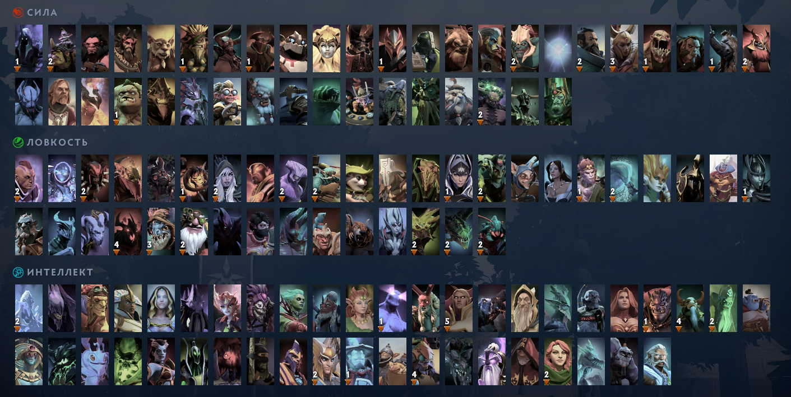

Dota 2 вышла в 2010 году и тогда в ней было всего 46 героев. С новыми патчами Valve добавляла новых героев – и вот спустя 10 лет мы можем сыграть уже за 123 персонажей. Поделены они по трем основным атрибутам: сила, ловкость и интеллект. Но эта не единственная разница героев Dota 2. Помимо основного атрибута, каждый герой имеет свою внутриигровую роль. Например, саппорты помогают кор-персонажам, расставляют варды и лечат, а керри- и мид-персонажи забирают большую часть золота с карты, и чаще всего именно от них зависит победа в игре. Сегодня рассказываем о всех героях Dota 2. Чтобы вам было удобнее, мы поделили их по основным атрибутам.
| Турнир | Дата | Призовой | Победитель | С кем играли |
|---|---|---|---|---|
| The International 2023 | Oct 12 - 29, 2023 | $3,380,455 | TSpirit | GG |
| The International 2022 | Oct 15 - 30, 2022 | $18,930,775 | Tundra | Secret |
| The International 2021 | Oct 07 - 17, 2021 | $40,018,195 | TSpirit | PSG.LGD |
| The International 2019 | Aug 15 - 25, 2019 | $34,330,068 | OG | Liquid |
| The International 2018 | Aug 15 - 25, 2018 | $25,532,177 | OG | PSG.LGD |
| The International 2017 | Aug 02 - 12, 2017 | $24,787,916 | Liquid | Newbee |
| The International 2016 | Aug 02 - 13, 2016 | $20,770,460 | Wings | DC |
| The International 2015 | Jul 27 - Aug 08, 2015 | $18,429,613 | EG | CDEC |